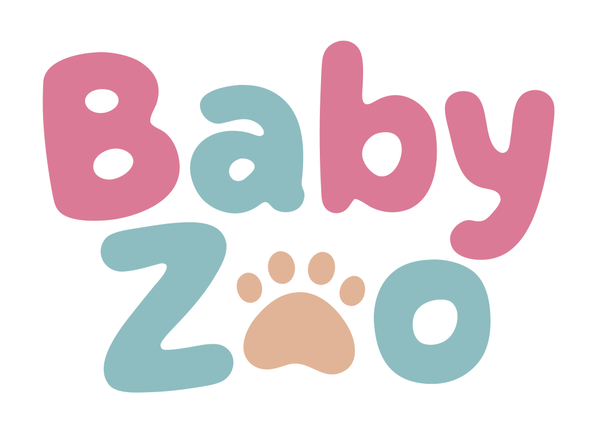

BabyZoo is a mobile app that offers interactive animal animations for young children. It is designed for parents or guardians to use together with their little ones. The app is intended to be operated by adults; content is suitable for very young children.
BabyZoo focuses on a calm, age-appropriate experience. The images and sounds in the app were created with licensed AI tools. There are no social features, no in-app messaging, and no location or camera use. Purchases are handled entirely by the Apple App Store and are only possible after a short question for grown-ups.
BabyZoo is available on the App Store for iPhone. The animals work without an internet connection. A purchase is linked to your Apple Account and can be restored on your other devices at any time.
For support or questions, see our Support page or contact us at hi@kudesi.de.